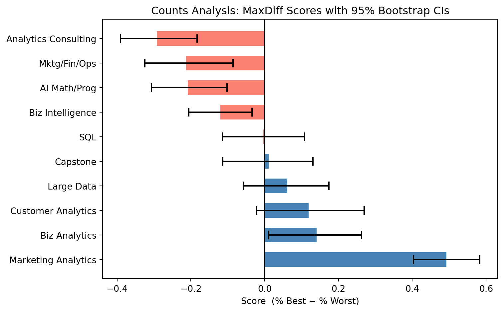
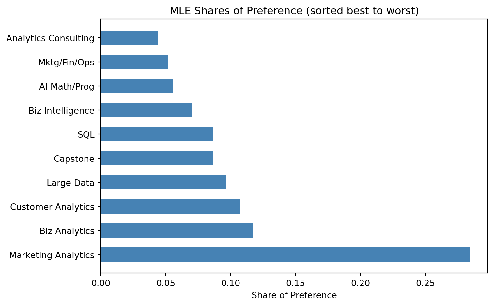
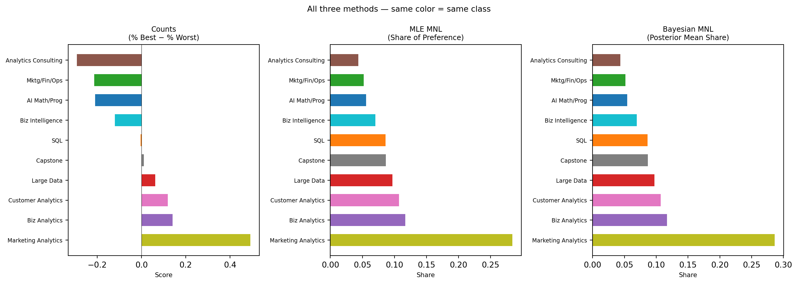

Counts, MLE, and Bayesian estimation of the MNL model
marketing
analytics
bayesian
Estimating MSBA student course preferences using Counts, MLE, and Bayesian MNL on MaxDiff survey data.
Author
Shuning Zhang
Published
May 28, 2026
Introduction
This assignment analyzes MaxDiff (Best-Worst Scaling) survey data collected from MSBA students at UCSD Rady to estimate relative preferences across the 10 core MSBA courses.
MaxDiff works by showing each respondent a small subset of items (4 at a time) and asking them to pick the most preferred and least preferred item in that subset. They repeat this over many screens. The key advantage over a 1–10 rating scale is that humans are much better at comparative judgments than at calibrating a numeric scale consistently. MaxDiff forces real trade-offs and avoids scale-use bias — no more everyone rating everything a 7.
We estimate preferences three ways:
Counts analysis — the percentage of times each class was picked best minus the percentage of times it was picked worst. Simple and fast to communicate.
MNL via Maximum Likelihood — the multinomial logit model fit by optimizing the log-likelihood. Gives point estimates and standard errors.
MNL via Bayesian (MCMC) — the same model fit by Metropolis-Hastings sampling. Gives full posterior distributions and easy uncertainty on derived quantities.
The three methods should broadly agree on the ranking. They differ in how they handle uncertainty and how much information they extract from the data.
The raw data also contains a small number of 2-item “tasks” involving an unlabeled item 11, which appear to be incomplete survey screens. We drop these and keep only the proper 4-item MaxDiff tasks.
Code
task_sizes = df.groupby(["record_id", "task"]).size()valid_tasks = task_sizes[task_sizes ==4].indexdf = df.set_index(["record_id", "task"]).loc[valid_tasks].reset_index()N = df["record_id"].nunique()T = df.groupby("record_id")["task"].nunique().mean()J =4n_items = df["item"].nunique()print(f"Number of respondents (N): {N}")print(f"Avg tasks per respondent (T): {T:.0f}")print(f"Items per task (J): {J}")print(f"Unique items in study: {n_items}")
Number of respondents (N): 85
Avg tasks per respondent (T): 8
Items per task (J): 4
Unique items in study: 10
Code
check = (df.groupby(["record_id", "task"])["response"] .agg(best =lambda x: (x ==1).sum(), worst =lambda x: (x ==-1).sum()))bad_best = (check["best"] !=1).sum()bad_worst = (check["worst"] !=1).sum()if bad_best ==0and bad_worst ==0:print("Sanity check PASSED: every task has exactly one best and one worst pick.")else:print(f"WARNING: {bad_best} tasks with != 1 best pick, "f"{bad_worst} tasks with != 1 worst pick.")
Sanity check PASSED: every task has exactly one best and one worst pick.
Code
shown = (df.groupby("item").size() .reset_index(name="times_shown") .merge(labels[["item", "short_name"]], on="item") .sort_values("item"))print("Times each item was shown:")print(shown[["item", "short_name", "times_shown"]].to_string(index=False))print(f"\nMin: {shown['times_shown'].min()}, Max: {shown['times_shown'].max()}")
Times each item was shown:
item short_name times_shown
1 AI Math/Prog 273
2 SQL 274
3 Mktg/Fin/Ops 272
4 Large Data 276
5 Biz Analytics 270
6 Analytics Consulting 267
7 Customer Analytics 276
8 Capstone 272
9 Marketing Analytics 274
10 Biz Intelligence 266
Min: 266, Max: 276
Exposure counts are balanced across all 10 items, as expected from a well-constructed MaxDiff design.
Counts Analysis
The counts analysis is the simplest way to summarize MaxDiff data. For each class \(j\), we compute what fraction of times it was shown it was picked best, and what fraction it was picked worst. The score is:
A score near +1 means students almost always chose this class as the best option when they saw it. A score near −1 means it was almost always chosen as worst. A score near 0 is middle-of-the-pack (or polarizing). This method is transparent and easy to explain, but it does not model the choice process — it ignores the competitive context of which other items were shown alongside each class.
np.random.seed(42)respondents = df["record_id"].unique()n_boot =1000boot_scores = np.zeros((n_boot, 10))for b inrange(n_boot): samp = np.random.choice(respondents, size=len(respondents), replace=True) boot_df = pd.concat([df[df["record_id"] == r] for r in samp], ignore_index=True) shown_b = boot_df.groupby("item").size() best_b = boot_df[boot_df["response"] ==1].groupby("item").size() worst_b = boot_df[boot_df["response"] ==-1].groupby("item").size()for i, item inenumerate(range(1, 11)): s = shown_b.get(item, 1) boot_scores[b, i] = best_b.get(item, 0)/s - worst_b.get(item, 0)/sci_lo = np.percentile(boot_scores, 2.5, axis=0)ci_hi = np.percentile(boot_scores, 97.5, axis=0)counts["ci_lo"] = [ci_lo[i-1] for i in counts["item"]]counts["ci_hi"] = [ci_hi[i-1] for i in counts["item"]]
Code
fig, ax = plt.subplots(figsize=(8, 5))bar_colors = ["steelblue"if s >=0else"salmon"for s in counts["score"]]y_pos =range(len(counts))ax.barh(list(y_pos), counts["score"].values, color=bar_colors, height=0.6)for i, (lo, hi) inenumerate(zip(counts["ci_lo"], counts["ci_hi"])): ax.plot([lo, hi], [i, i], color="black", linewidth=1.5) ax.plot([lo, lo], [i-0.15, i+0.15], color="black", linewidth=1.5) ax.plot([hi, hi], [i-0.15, i+0.15], color="black", linewidth=1.5)ax.set_yticks(list(y_pos))ax.set_yticklabels(counts["short_name"].values)ax.axvline(0, color="black", linewidth=0.8)ax.set_xlabel("Score (% Best − % Worst)")ax.set_title("Counts Analysis: MaxDiff Scores with 95% Bootstrap CIs")plt.tight_layout()plt.show()

Marketing Analytics stands out clearly at the top with a score well above the rest. Business Analytics and Customer Analytics cluster in the middle-upper range. Analytics Consulting sits at the bottom. The bootstrap confidence intervals for the top and bottom items are narrow, so those rankings are reliable; the middle is noisier.
From MaxDiff Data to MNL Choices
Before fitting the MNL, we need to think about how a MaxDiff task converts into standard discrete-choice observations.
In a typical MNL setup, a person sees \(J\) options and picks one. The model assigns each option \(j\) a utility \(\beta_j\) and says the probability of choosing \(j\) from a set \(\mathcal{S}\) is the softmax:
The best pick from all 4 shown items — standard softmax over the full set.
The worst pick from the remaining 3 items after removing the best. Because picking the minimum utility item is equivalent to picking the maximum of the negated utilities, this is just another MNL with \(-\beta\):
Identifiability: The softmax is invariant to adding a constant to all \(\beta\)’s, so only \(J-1 = 9\) parameters are identified. We fix \(\beta_1 = 0\) (item 1 = AI Math/Prog as reference) and estimate \(\beta_2, \ldots, \beta_{10}\). All estimates are interpreted relative to item 1.
Total tasks for likelihood: 680
First 3 tasks:
items best worst
[5, 7, 4, 1] 7 1
[8, 3, 10, 9] 10 8
[3, 5, 2, 6] 2 6
MNL via Maximum Likelihood
The log-likelihood sums two contributions per task: the log-probability of the best pick, and the log-probability of the worst pick from the remaining items with flipped signs:
fig, ax = plt.subplots(figsize=(8, 5))y_pos =range(len(mle_df))ax.barh(list(y_pos), mle_df["share"].values, color="steelblue", height=0.6)ax.set_yticks(list(y_pos))ax.set_yticklabels(mle_df["short_name"].values)ax.set_xlabel("Share of Preference")ax.set_title("MLE Shares of Preference (sorted best to worst)")plt.tight_layout()plt.show()

The MLE ranking agrees closely with the counts ranking at the top and bottom. Marketing Analytics has by far the largest share (~28%), nearly 2.5× the next-best class. Analytics Consulting has the smallest share. Some middle-tier courses shift slightly in rank because MNL uses information from all shown-but-not-chosen items, not just the picks. The standard errors are reassuringly small for the top and bottom items, wider for the middle pack.
The shares of preference are easier to interpret than raw \(\hat\beta\)’s: they answer “if all 10 classes were shown on one screen, what fraction of respondents would pick each one as best?”
MNL via Bayesian Estimation
We fit the same MNL model using a Metropolis-Hastings random-walk sampler. Instead of a single point estimate, we get a full posterior distribution over \(\boldsymbol{\beta}\).
We use a weakly informative prior: \(\beta_j \sim N(0, 10)\) for each of the 9 free parameters (SD \(\approx 3.16\)). This is very diffuse relative to the scale of our estimates, so the posterior will be dominated by the data.
The Metropolis-Hastings algorithm proposes a random step from the current parameter values, computes the log-posterior ratio, and accepts or rejects according to that ratio. This produces a Markov chain whose stationary distribution is the posterior.
The posterior means are very close to the MLE estimates — as expected when the prior is diffuse relative to the data. The 95% credible intervals on the shares are directly readable from the plot; getting equivalent intervals from the MLE would require the delta method. The non-overlapping CI for Marketing Analytics confirms it is genuinely preferred over everything else.
item_order =list(range(1, 11))cmap = matplotlib.colormaps["tab10"]color_map = {item: cmap(i) for i, item inenumerate(item_order)}def plot_panel(ax, names, values, colors, title, xlabel): order = np.argsort(values)[::-1] names_sorted = [names[i] for i in order] values_sorted = [values[i] for i in order] colors_sorted = [colors[i] for i in order] y =range(len(names_sorted)) ax.barh(list(y), values_sorted, color=colors_sorted, height=0.6) ax.set_yticks(list(y)) ax.set_yticklabels(names_sorted, fontsize=7) ax.set_title(title, fontsize=9) ax.set_xlabel(xlabel, fontsize=8) ax.axvline(0, color="black", linewidth=0.4)names_arr = [short_names[i] for i in item_order]colors_arr = [color_map[i] for i in item_order]counts_scores = [counts[counts["item"]==i].iloc[0]["score"] for i in item_order]mle_shares = [mle_df[mle_df["item"]==i].iloc[0]["share"] for i in item_order]bayes_shares = [bayes_df[bayes_df["item"]==i].iloc[0]["share_mean"] for i in item_order]fig, axes = plt.subplots(1, 3, figsize=(14, 5))plot_panel(axes[0], names_arr, counts_scores, colors_arr,"Counts\n(% Best − % Worst)", "Score")plot_panel(axes[1], names_arr, mle_shares, colors_arr,"MLE MNL\n(Share of Preference)", "Share")plot_panel(axes[2], names_arr, bayes_shares, colors_arr,"Bayesian MNL\n(Posterior Mean Share)", "Share")fig.suptitle("All three methods — same color = same class", fontsize=10)plt.tight_layout()plt.show()

The three methods agree strongly on the top and bottom of the ranking: Marketing Analytics is #1 in all three, and Analytics Consulting is last in all three. The middle of the distribution sees some rank swaps — mostly between courses with similar estimated utilities, where small modeling differences can flip adjacent positions.
The MNL adds over counts by using competitive context. Every time a class is shown alongside others and not chosen, that’s information the counts method ignores. MNL uses it, which is why some middle-tier courses shift rank.
Bayes adds over MLE by giving us credible intervals on the shares of preference directly — we just take percentiles of the softmax-transformed MCMC draws. With MLE we would need the delta method to propagate uncertainty through the softmax, which requires additional computation and is an approximation. Bayes also provides a natural framework for extending the model hierarchically to individual-level preferences.
Discussion
What the data say: Marketing Analytics (MGTA 495) is the most preferred course by a wide margin — its share of preference (~29%) is more than twice that of the second-ranked course. Business Analytics and Customer Analytics cluster in the middle. Analytics Consulting and Mktg/Fin/Ops are the least preferred. The result is somewhat surprising given that Customer Analytics and SQL might be expected to top a “practical skills” ranking; the strong preference for Marketing Analytics may reflect its reputation or the instructor effect.
When to use each method:
Counts is the right tool for a quick executive summary or dashboard. It requires no modeling assumptions, is easy to explain to any audience, and runs in seconds. The trade-off is that it ignores competitive context and gives no principled uncertainty estimates.
MLE MNL is appropriate when you need a single rigorous point estimate with classical standard errors — for example, to report in a paper or a business deliverable. It extracts more information from the data than counts and puts results on a proper probability scale.
Bayesian MNL is best when you need uncertainty on derived quantities (like shares of preference or market simulations), when you plan to extend the model (e.g., hierarchical MNL for individual-level preferences), or when you want to incorporate prior knowledge. The cost is computational — MCMC is slower than optimization.
Caveats: This survey was taken by a self-selected sample of MSBA students, likely biased toward students who were engaged enough to complete it. Preferences may differ by cohort year, prior work experience, and stage in the program. Students who have already taken a course may rate it differently than those who haven’t.
Next steps: With more time, I would fit a hierarchical MNL (mixed logit) to estimate individual-level \(\beta\)’s and see whether there are meaningful clusters of students with different preference profiles. I would also investigate whether preferences differ by professional background or year in the program.